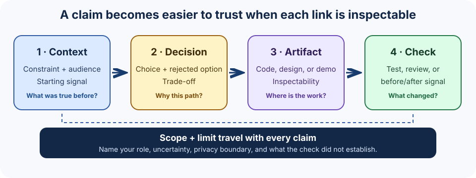

01 · Visual model
Build an evidence chain

Text equivalent: Context names the constraint, audience, and starting signal. Decision records the choice, rejected option, and trade-off. Artifact points to code, design, writing, or a demo. Check compares a test, review, or before-and-after observation. Scope and limits stay attached to the entire chain.
02 · Why it matters
A claim is not yet evidence
“Built an accessible checkout” leaves useful questions unanswered. What barrier existed? What did you personally decide? Can someone inspect the work? What check changed your confidence? A case study becomes more useful when it answers those questions without pretending that one artifact proves every skill.
The chain adapts the situation–task–action–result pattern used in structured interviewing. It adds two portfolio needs: an artifact that can be inspected and a limitation that keeps the conclusion proportional to the evidence.
03 · Five fields
What each field contributes
Context
State the audience, constraint, and starting signal. Prefer one observable problem to a broad mission statement.
Decision
Name your choice and one alternative. The trade-off shows judgment better than a list of tools.
Artifact
Link the smallest inspectable proof: a focused change, document, test, design, or recording.
Check
Explain the comparison and result. Label invented examples, estimates, and informal feedback honestly.
Limit
Name your role, uncertainty, privacy boundary, and the next test that would strengthen the claim.
04 · Worked example
Turn “improved checkout UX” into a checkable card
This example and its numbers are invented for teaching.
| Field | Evidence-card entry |
|---|---|
| Context | Eight of 20 sample submissions in a fictional usability check lost required-field feedback. |
| Decision | Preserve entered values and move the error beside the field; reject a generic banner because it separates the message from the action. |
| Artifact | A focused pull request, before/after recording, and the reusable test script. |
| Check | In the same invented check, 18 of 20 submissions completed without that error. |
| Limit | A small convenience sample did not measure long-term conversion, every assistive technology, or the student’s performance on an unrelated project. |
05 · Reality check
Common broken links
- Tool list without a decision: names software but hides the trade-off.
- Result without a check: “increased engagement” has no baseline, method, or artifact.
- Team result presented as solo work: hides collaborators and overstates causation.
- Private proof pasted publicly: exposes client data, credentials, or personal information.
- Beautiful screenshot without a text explanation: makes the mechanism hard to inspect and inaccessible to some readers.
06 · Practice
Draft one card in 20 minutes
- Choose one small project and one claim.
- Paste the worksheet below and fill each line with one or two sentences.
- Follow every result claim to an artifact or label it as an estimate.
- Ask a reader to point to your decision, evidence, and limit without your help.
Knowledge check
- Why is a decision stronger when it names a rejected option?
- What makes a result inspectable?
- What should you do when the best artifact is private?
Reveal answer guidance
- The rejected option exposes the trade-off and the reasoning behind the choice.
- A nearby artifact plus a described check lets a reader examine how the result was produced.
- Describe the evidence type and your role without exposing it; share a sanitized or permissioned substitute, or narrow the claim. Never invent proof.
07 · Next steps
Make the project easy to inspect
Use GitHub’s job-search profile guide to improve a project README, setup path, example, and tests. Use the W3C Images Tutorial to give diagrams equivalent text. See the source and limitation ledger for claim status and dates.